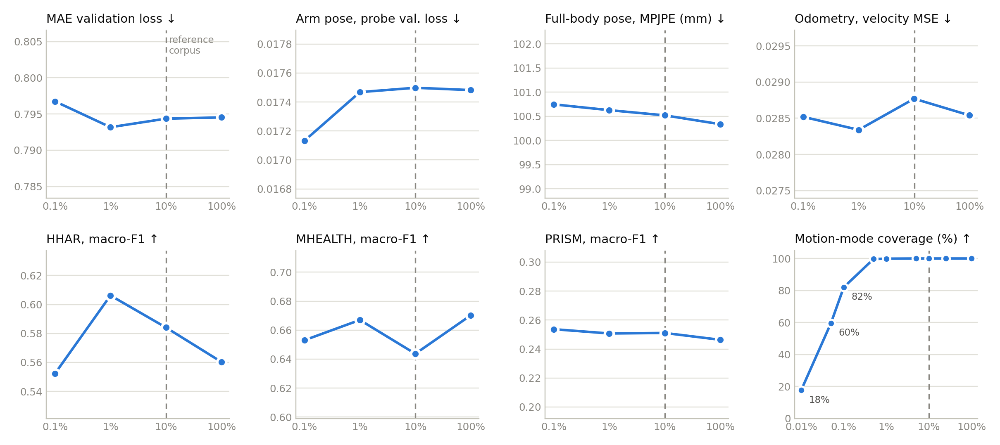

Ten tasks from eight datasets in six families — arm and full-body pose, inertial odometry, microgesture, IMU–text retrieval, Parkinson's disease and activity recognition — scored under frozen probing, fine-tuning and training from scratch with one backbone, one decoder per task and fixed splits.
Every encoder below was pretrained on the same five-source reference corpus (197,094 windows, about 280 h), which contains none of the evaluation sets. Activity recognition is scored on HHAR, MHEALTH, PRISM and our user-study smartwatch set (60 fine-grained activities, split in time within each recording).
| Encoder | Arm posepos. err. cm ↓ | Full-body poseMPJPE mm ↓ | Odometry (wrist frame)ATE m ↓ | Microgestureclip F1 ↑ | IMU–textR@1, G=100 ↑ | Parkinson'ssubject F1 ↑ | HHARmacro-F1 ↑ | MHEALTHmacro-F1 ↑ | PRISMmacro-F1 ↑ | User studymacro-F1 ↑ | HAR mean4 sets ↑ |
|---|---|---|---|---|---|---|---|---|---|---|---|
| Self-supervised, same backbone, same corpus | |||||||||||
| MAE reference model | queued | queued | queued | 0.647 | 27.9 | 0.340 | 0.621 | 0.686 | 0.279 | 0.727 | 0.578 |
| LIMU-BERT | queued | queued | queued | 0.617 | 24.9 | 0.340 | 0.612 | 0.676 | 0.251 | 0.711 | 0.562 |
| SimMTM | queued | queued | queued | 0.559 | 17.2 | 0.360 | 0.575 | 0.614 | 0.267 | 0.668 | 0.531 |
| FOCAL | queued | queued | queued | 0.481 | 8.6 | 0.254 | 0.449 | 0.630 | 0.219 | 0.470 | 0.442 |
| RelCon | queued | queued | queued | 0.385 | queued | queued | 0.333 | 0.384 | 0.183 | queued | · |
| Ablations of MAE | |||||||||||
| MAE, plain attention | queued | queued | queued | 0.639 | 26.3 | 0.416 | 0.602 | 0.681 | 0.265 | 0.730 | 0.569 |
| MAE, accelerometer only | queued | queued | queued | 0.622 | 20.7 | 0.399 | 0.578 | 0.685 | 0.280 | 0.695 | 0.559 |
| No pretraining | |||||||||||
| Trained from scratch | 8.21 | 92.72 | 0.1618 | 0.608 | 23.2 | 0.340 | 0.488 | 0.632 | 0.278 | 0.735 | 0.533 |
| Task-specific methods, own recipes, not ranked | |||||||||||
| MobilePoser | 9.74 | 91.88 | · | · | · | · | · | · | · | · | · |
| Mix-Token | · | · | · | 0.500 | · | · | · | · | · | · | · |
| NormWear | · | · | · | 0.453 | · | · | · | · | · | · | · |
| UniMTS, from scratch | · | · | · | · | 13.1 | · | · | · | · | · | · |
| DeepConvLSTM | · | · | · | · | · | · | 0.448 | 0.556 | · | · | · |
| Encoder | Arm posepos. err. cm ↓ | Full-body poseMPJPE mm ↓ | Odometry (wrist frame)ATE m ↓ | Microgestureclip F1 ↑ | IMU–textR@1, G=100 ↑ | Parkinson'ssubject F1 ↑ | HHARmacro-F1 ↑ | MHEALTHmacro-F1 ↑ | PRISMmacro-F1 ↑ | User studymacro-F1 ↑ | HAR mean4 sets ↑ |
|---|---|---|---|---|---|---|---|---|---|---|---|
| Self-supervised, same backbone, same corpus | |||||||||||
| MAE reference model | 8.01 | 88.11 | 0.1541 | 0.542 | 38.8 | 0.597 | 0.603 | 0.724 | 0.368 | 0.861 | 0.639 |
| LIMU-BERT | 8.18 | 89.74 | 0.1576 | 0.573 | 36.6 | 0.563 | 0.563 | 0.629 | 0.295 | 0.758 | 0.561 |
| SimMTM | 8.44 | 92.91 | 0.1629 | 0.619 | 32.4 | 0.523 | 0.470 | 0.568 | 0.308 | 0.737 | 0.521 |
| FOCAL | 8.66 | 95.92 | 0.1767 | 0.393 | 22.4 | 0.441 | 0.613 | 0.659 | 0.288 | 0.683 | 0.561 |
| RelCon | queued | queued | queued | queued | queued | queued | queued | queued | queued | queued | · |
| Ablations of MAE | |||||||||||
| MAE, plain attention | 8.19 | 88.38 | 0.1569 | 0.703 | 37.0 | 0.493 | 0.526 | 0.686 | 0.362 | 0.786 | 0.590 |
| MAE, accelerometer only | 8.88 | 94.42 | 0.1898 | 0.606 | 31.5 | 0.684 | 0.568 | 0.683 | 0.298 | 0.772 | 0.580 |
| No pretraining | |||||||||||
| Trained from scratch | 8.21 | 92.72 | 0.1618 | 0.608 | 23.2 | 0.340 | 0.488 | 0.632 | 0.278 | 0.735 | 0.533 |
| Task-specific methods, own recipes, not ranked | |||||||||||
| MobilePoser | 9.74 | 91.88 | · | · | · | · | · | · | · | · | · |
| Mix-Token | · | · | · | 0.500 | · | · | · | · | · | · | · |
| NormWear | · | · | · | 0.453 | · | · | · | · | · | · | · |
| UniMTS, from scratch | · | · | · | · | 13.1 | · | · | · | · | · | · |
| DeepConvLSTM | · | · | · | · | · | · | 0.448 | 0.556 | · | · | · |
best controlled result per task (scratch included)runningqueuedafter pretrain job state of a missing cell· not part of this comparison
Frozen probes on the pose and odometry tasks use deep temporal decoders (4 cross-channel + 8 temporal layers for pose, 12 layers for odometry); MAE's earlier shallow-decoder probes on those three tasks were withdrawn and are being re-run. Task-specific methods use their own recipes and inputs and are shown for orientation only.
Each baseline uses the configuration of its published row with the same five sources and the same cached windows as MAE, early stopping with patience 10, capped at 160,000 steps. MAE itself stopped at 154,000.
| Task | Dataset | Subjects | Hours | Output | Split |
|---|---|---|---|---|---|
| Arm pose | Nymeria | 235 | 253.1 | 5-joint rotations | session |
| Full-body pose | Nymeria | ″ | ″ | 23-joint rotations | session |
| Inertial odometry | Nymeria | ″ | ″ | pelvis velocity (wrist frame) | session |
| Microgesture | OpenWatch | 43 | 1.9 | 6 classes / clip | subject |
| IMU–text retrieval | HumanML3D (simulated) | – | 28.6 | text embedding | official |
| Parkinson's disease | PADS | 469 | 35.9 | 3 classes / subject | subject |
| Activity recognition | HHAR | 9 | 4.8 | 6 classes / window | subject |
| Activity recognition | MHEALTH | 10 | 1.9 | 12 classes / window | subject |
| Activity recognition | PRISM | 31 | 16.3 | 96 classes / window | subject |
| Activity recognition | User study (ours) | 10 | 2.0 | 60 classes / window | time |
Subjects and hours are measured from the data, train and evaluation splits together. Nymeria participants recur across sessions (81 of 82 validation participants also appear in training). OpenWatch subjects are canonical identities after duplicates are merged. The user-study set is split in time (first 80 % of each recording for training), so its participants recur. HumanML3D hours exclude mirrored copies.
| Source | Type | Windows | Hours | Scaling pool |
|---|---|---|---|---|
| Seven activity-recognition sets | real | 93,510 | 133.0 | 93,510 |
| OCDetect | real | 8,703 | 12.4 | 1,253,077 |
| EatingSpeed | real | 57,536 | 81.8 | 575,356 |
| Motion-X | synthetic | 4,683 | 6.7 | 4,683 |
| SONIC | synthetic | 32,662 | 46.5 | 32,662 |
| Total | 197,094 | 280.3 | 1,959,288 |
10.24 s windows at 50 % overlap; hours count the 5.12 s stride. The scaling analysis draws from a ten-times-larger pool of the same sources (last column).
Same frozen MAE encoder, same data and recipe, full-body pose on Nymeria; only the probe decoder changes.
| Probe decoder (cross-channel × temporal layers) | MPJPE mm ↓ |
|---|---|
| 0 × 0, linear readout | 105.42 |
| 1 × 0 | 98.17 |
| 1 × 4 | 94.63 |
| 1 × 6 | 94.21 |
| 1 × 16 | 94.13 |
An 11.3 mm spread from the readout alone, larger than the gap between most pretraining objectives. Measured on the earlier 11-source MAE; mean of the last five evaluations.
With all 1,000 motion modes available, 0.1 % of a 1.96-million-window pool (1,959 windows) matches the full pool on reconstruction loss and on the kinematic probes; 0.5 % of the pool already covers 99.7 % of its motion modes.
